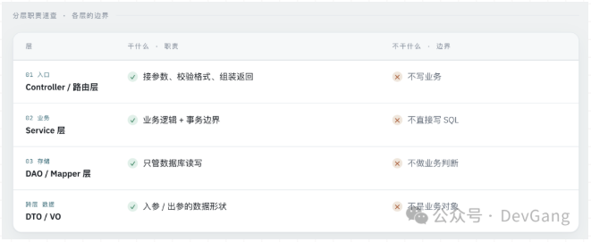
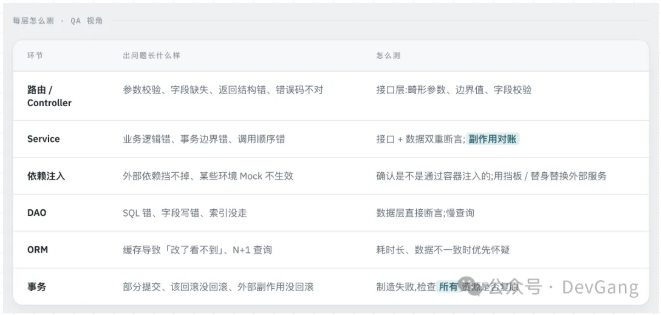

点进 Service，全是接口。点进 ServiceImpl，前半段在校验业务规则，后半段调了个 stockService.deduct()，又得跳到另一个 Service。
看不懂后端代码，卡点不在语法。
跟着一个请求走一遍，你会经过五站——每一站都藏着一个"为什么代码长这样"的答案。
示例：POST /api/v1/orders {sku_id: 1001, count: 2, coupon_id: 5}
一、请求 5 站
第 1 站：路由
你的脚本发一个请求到 POST /api/v1/orders，后端怎么知道该执行哪段代码？答案是查一张表——URL 和函数的对应关系，这个叫路由。
# 路由：URL 不是文件名，是一张映射表
ROUTES = {
"POST /api/v1/orders": create_order, # ← 请求进来，靠这张表找到函数
"GET /api/v1/orders/{id}": get_order,
}
测试视角：你每天调的是 URL，但 URL 是靠映射表找到函数的。所以线上报错时，别只把报错信息甩给研发——顺手问一句这个 URL 对应哪个函数，你就能自己先定位到出问题的那一层，而不是每次都等研发翻代码。
第 2 站：分层

测试的是下单接口，但在后端眼中是 Controller → Service → DAO 一串调用，中间还可能跳到别的 Service（扣库存等）。业务逻辑通常都在 Service 层，这是测试重点关注的地方。
# ===== Controller 层 =====
def create_order(req):# Controller：只管校验和返回
if req.count <= 0: return err("数量非法")
return order_service.create(req) # ← 业务在这儿
# ===== Service 层 =====
def create(req):# Service：业务 + 事务边界
with transaction(): # ← 事务从这儿开始
stock_dao.deduct(req.sku_id, req.count)
coupon_dao.use(req.coupon_id)
return order_dao.insert(req) # 出了这个函数就提交/回滚
# ===== DAO 层 =====
def insert(order):# DAO：只有 SQL
db.execute("INSERT INTO orders ...")
分层的本质是用“规矩”换“可维护性”：改动局部化、每层能单独测、逻辑能复用。反过来说，所有逻辑堆一个函数里就是面条代码——改一处可能影响全部，测试也无从下手。
测试视角：同一个"下单失败"，可能出在 Controller（参数校验没做）、Service（库存判断写反了）、也可能出在 DAO（SQL 少了个条件）。这三层的验证方式完全不同——Controller 层看返回，Service 层要查副作用，DAO 层直接查库。下次提 Bug 前先想想"它大概在哪一层"，你给的复现步骤会精准很多。
第 3 站：依赖注入
代码里面写的 stockService.deduct()，但你看不到它是怎么被创建的，因为容器在启动时帮你 new 好了并塞进来。
# 你看到的：函数里直接用，但没见它从哪来
def create(req):
stock.deduct(...) # ← stock 哪来的？签名里没有
# 真相：容器在启动时创建好，挂到了这个模块的变量（或对象的属性）上
# 测试时：容器换个假的挂上去 → 这就是 Mock 的底层原理
简单一句话：容器帮你把依赖的对象创建好了，你直接用。
Service 全是接口，接口和实现类分开，就是为了配合注入：IOrderService 是插座，OrderServiceImpl 是插头，容器想插哪个就插哪个。所以你找不到 new，也找不到"到底调用的哪个实现"。
测试视角：理解了依赖注入，你就明白——
- 为什么换个实现类就能把外部支付、短信、风控 Mock 掉
- 为什么有些环境能 Mock、有些不能（取决于是不是通过容器注入的）
第 4 站：ORM
代码里没有 UPDATE 语句，但数据库变了，因为 ORM 把对象变更“翻译”成了 SQL，在某个时刻自动发出去。
order = Order.get(order_id) # 从库里取出一个对象
order.status = "PAID" # 只改了对象属性，没有 UPDATE
# 没写 SQL，但事务提交时 ORM 自动生成：
# UPDATE orders SET status='PAID' WHERE id=?
测试视角：你遇到过的"我明明在数据库改了数据，接口查出来还是旧的"，根子基本都在这儿——不是数据库没生效，是 ORM 在同一条连接里缓存了这个对象，或者你的改动在另一个没提交的事务里，或者你查的是从库、改的是主库。所以造数据一定要在事务外造、造完要确认提交。另外，如果某个接口突然变慢，先怀疑 N+1：查 10 条订单，ORM 偷偷发了 11 条 SQL。
第 5 站：事务边界
事务从 Service 层开始，方法正常返回→提交，抛异常→回滚，所以“执行到一半失败”，前面扣的库存也会全部撤销。这里有个最坑的点：事务没包住的部分（发消息、调外部接口）不会回滚，这也是容易出 bug 的地方。
with transaction(): # 边界：包住全部 → 失败全回滚
deduct_stock()
send_mq() # ← 但 MQ 不在事务里！
raise Exception("支付失败") # 库存回滚了，消息却发出去了
那外部调用怎么办？这是分布式最棘手的问题之一，我们在第 8 篇专门讲。这里先记住一件事：事务管不住数据以外的东西。
测试视角：这是测试最容易漏的一类 Bug——“接口报错不等于什么都没发生”。库存回滚了，但 MQ 消息发出去了、短信发了、外部接口调了。所以验失败场景时，别只看响应码和主表，要把所有副作用清单列出来，逐个确认它们复原了没有。
二、分层的测试策略
把上面五站的"测试视角"汇总一下，就得到这张表：

一句话：知道代码分几层，你才知道一个 Bug 该在哪一层验、该看数据库还是看返回。
三、结尾
以后接手一个接口，搞清三件事：
-
这个接口的业务在哪个 Service？
-
事务边界在哪一行？失败会回滚哪些东西？
-
有没有改了数据库但接口读不到的坑？
这三件事搞明白，你才算真的“看懂”了这个接口，而不只是“会调”。
下一篇聊一个你天天在调、但可能没细想过的东西：接口设计。为什么返回里要塞冗余字段？为什么加个字段要出 v2，而不是直接改 v1？